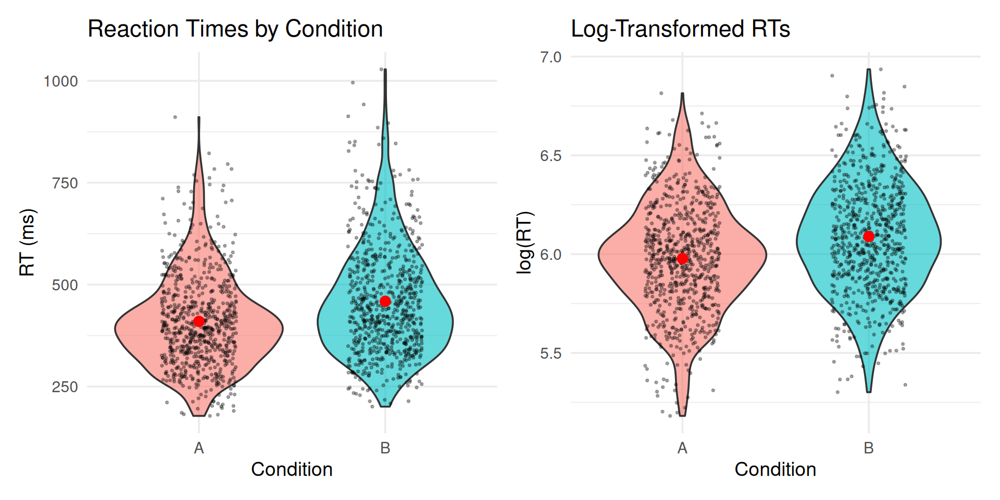
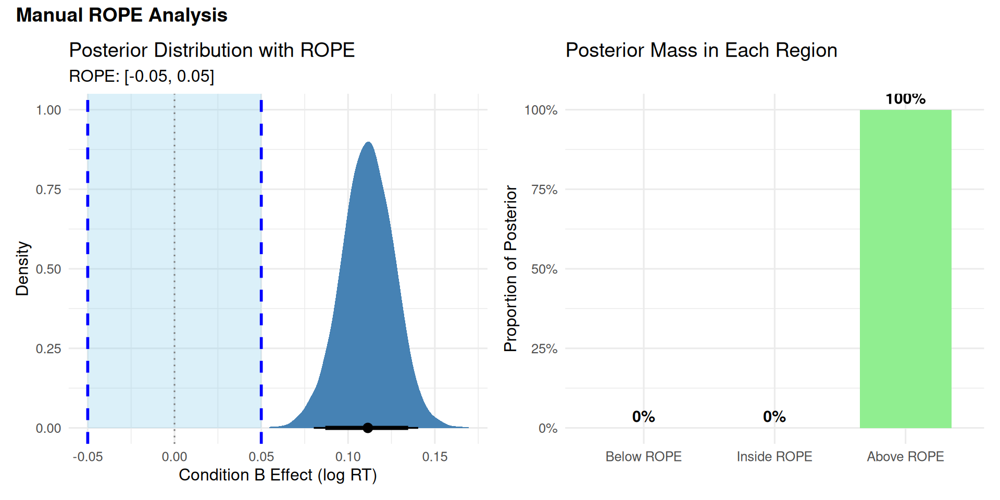
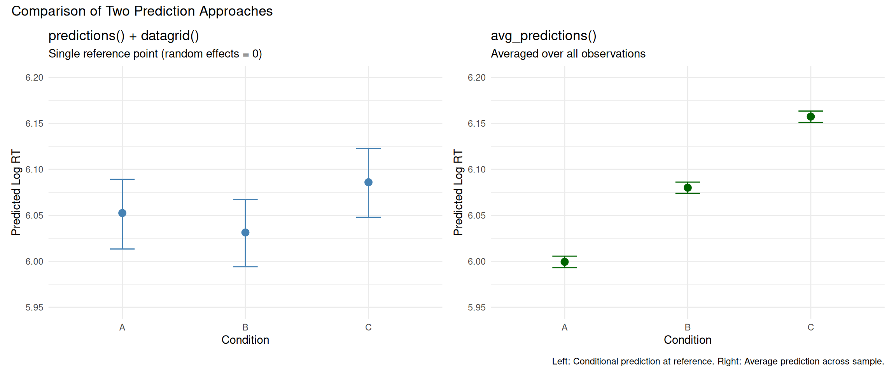
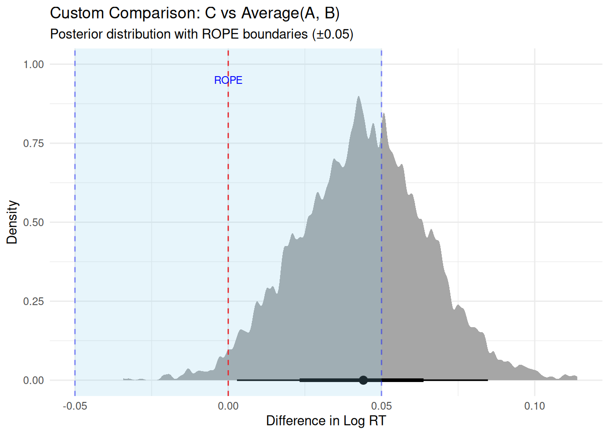

6: Bayesian decision analysis and practical significance with ROPE, emmeans, and marginaleffects
Bayesian Mixed Effects Models with brms for Linguists
Author
Job Schepens
Published
January 20, 2026
1 The Problem: Does Effect X Matter?
1.1 Research Scenario
Imagine you’ve run a psycholinguistic experiment and fitted a Bayesian model. You have posterior distributions for your effects. Now you face the question:
“Is this effect meaningful in practice?”
You have an estimate (e.g., β = 0.12 log-RT units)
You have uncertainty (95% CI: [0.08, 0.16])
But: Is this difference big enough to matter?
Practical significance is different from statistical significance:
Statistical: “Is there an effect?” (distinguishable from noise) (we will discuss this in the session on Bayes Factor)
Practical: “Does it matter?” (large enough to care about)
┌─────────────────────────────────────────────────────────────┐
│ QUESTION │ TOOL │
├─────────────────────────────────────────────────────────────┤
│ Which model structure is better? │ LOO (Module 05) │
│ Is effect meaningful? │ ROPE (Module 06) │
│ Compare multiple groups? │ emmeans (Module 06) │
│ Custom predictions/contrasts? │ marginaleffects (M06) │
│ Evidence for hypothesis? │ Bayes Factor (M07) │
│ Are estimates robust to priors? │ Prior comparison (M04)│
└─────────────────────────────────────────────────────────────┘
2.3 Choosing The Right Tool
Use ROPE when:
You want to declare “effect too small to matter”
You need clear decision rules (accept/reject/undecided)
Use emmeans when:
You have factorial designs (multiple groups/conditions)
Use marginaleffects when:
You’re working with complex models (GAMs, interactions)
Use Bayes Factors (Module 07) when:
You want to quantify evidence for one hypothesis over another (see Module 07)
Use LOO (Module 05) when:
Comparing different model structures
Doing feature selection
Predictive performance is primary concern
2.4 Setup
Show code
library(brms)library(tidyverse)library(bayesplot)library(posterior)library(tidybayes)library(bayestestR) # For ROPE analysislibrary(emmeans) # For factorial design comparisonslibrary(marginaleffects) # For flexible predictions/comparisons# Set plotting themetheme_set(theme_minimal(base_size =14))
2.5 Generate Reaction Time Data
We’ll generate RT data similar to previous modules, but with specific properties useful for hypothesis testing demonstrations:
Clear directional effect (Condition B slower than A)
Effect size in a realistic range for psycholinguistics
# A tibble: 1 × 2
Measure Value
<chr> <dbl>
1 Effect size (log scale) 0.111
2.6 Visualize the Data
Show code
p1 <-ggplot(rt_data, aes(x = condition, y = rt, fill = condition)) +geom_violin(alpha =0.6) +geom_jitter(width =0.2, alpha =0.3, size =0.5) +stat_summary(fun = mean, geom ="point", size =3, color ="red") +stat_summary(fun.data = mean_cl_boot, geom ="errorbar", width =0.2, color ="red", linewidth =1) +labs(title ="Reaction Times by Condition",y ="RT (ms)", x ="Condition") +theme(legend.position ="none")p2 <-ggplot(rt_data, aes(x = condition, y = log_rt, fill = condition)) +geom_violin(alpha =0.6) +geom_jitter(width =0.2, alpha =0.3, size =0.5) +stat_summary(fun = mean, geom ="point", size =3, color ="red") +stat_summary(fun.data = mean_cl_boot, geom ="errorbar",width =0.2, color ="red", linewidth =1) +labs(title ="Log-Transformed RTs",y ="log(RT)", x ="Condition") +theme(legend.position ="none")library(patchwork)p1 + p2

2.7 Fit the Model
Show code
# Define priorsrt_priors <-c(prior(normal(6, 1), class = Intercept), # Baseline around 400msprior(normal(0, 0.5), class = b), # Effects typically < 50% changeprior(exponential(1), class = sd), # Moderate random effectsprior(exponential(2), class = sigma), # Residual noiseprior(lkj(2), class = cor) # Slight correlation regularization)# Fit modelrt_model <-brm( log_rt ~ condition + (1+ condition | subject) + (1| item),data = rt_data,family =gaussian(),prior = rt_priors,iter =2000,warmup =1000,chains =4,cores =4,seed =2026,backend ="cmdstanr",control =list(adapt_delta =0.95))
2.8 Model Summary
Show code
summary(rt_model)
Family: gaussian Links: mu = identity Formula: log_rt ~ condition + (1+ condition | subject) + (1| item) Data:rt_data (Number of observations:1440) Draws:4 chains, each with iter =2000; warmup =1000; thin =1; total post-warmup draws =4000Multilevel Hyperparameters:~item (Number of levels:24) Estimate Est.Error l-95% CI u-95% CI Rhat Bulk_ESS Tail_ESSsd(Intercept) 0.110.020.080.151.009651722~subject (Number of levels:30) Estimate Est.Error l-95% CI u-95% CI Rhat Bulk_ESSsd(Intercept) 0.170.020.130.221.00828sd(conditionB) 0.060.020.020.091.00797cor(Intercept,conditionB) 0.040.26-0.450.551.002292 Tail_ESSsd(Intercept) 1621sd(conditionB) 423cor(Intercept,conditionB) 2137Regression Coefficients: Estimate Est.Error l-95% CI u-95% CI Rhat Bulk_ESS Tail_ESSIntercept 5.980.045.906.051.01568802conditionB 0.110.010.080.141.0023872584Further Distributional Parameters: Estimate Est.Error l-95% CI u-95% CI Rhat Bulk_ESS Tail_ESSsigma 0.200.000.190.211.0042982793Draws were sampled using sample(hmc). For each parameter, Bulk_ESSand Tail_ESS are effective sample size measures, and Rhat is the potentialscale reduction factor on split chains (at convergence, Rhat =1).
3 ROPE (Kruschke, 2015) and Decision Analysis (Gelman et al., 2013)
3.1 ROPE
Statistical significance tells us if an effect differs from zero. But:
Statistical question: Is the effect exactly zero?
Practical question: Is the effect close enough to zero to ignore?
This is where ROPE (Region of Practical Equivalence) comes in.
3.1.1 Making ROPE-based Decisions
Instead of testing if β = 0 exactly, we define a small interval around zero:
\[\text{ROPE} = [-\varepsilon, +\varepsilon]\]
where \(\varepsilon\) is the smallest effect size we care about (domain-specific).
95% HDI overlaps ROPE → Uncertain (collect more data or accept uncertainty)
Terminology: HDI vs. HPD
Throughout this document, we use HDI (Highest Density Interval) to refer to the credible interval containing the 95% most probable parameter values with the shortest width. This is also called HPD (Highest Posterior Density) or HPDI in some literature.
All three terms refer to the same concept: - HDI = Highest Density Interval (most common in modern usage) - HPD = Highest Posterior Density (common in older literature)
- HPDI = Highest Posterior Density Interval (explicit combination)
The R package HDInterval::hdi() and the emmeans output column lower.HPD/upper.HPD both compute this same interval type.
3.1.2 Setting ROPE Boundaries
Common Pitfall: Post-Hoc ROPE Boundaries
ROPE boundaries must be set before seeing results based on:
Domain knowledge (e.g., “RT differences < 50ms are imperceptible”)
Standardized effect sizes (e.g., “Cohen’s d < 0.1 considered negligible”)
Mistake: Setting ROPE after looking at posterior to get desired conclusion.
Why it matters: Post-hoc boundaries invalidate the test (like p-hacking).
3.1.3 Four Methods for Justifying ROPE Boundaries
From Kruschke (2015, Chapter 12): ROPE boundaries should represent the smallest effect you care about. Here are four principled methods for setting them:
3.1.3.1 Method 1: Previous Research / Meta-Analysis
Use effect sizes from prior literature to calibrate what counts as “small.”
# Example: Meta-analysis shows typical RT effect = 100ms (≈0.10 log-units)# Decision: Set ROPE at 1/3 of typical effectrope_from_meta <-c(-0.03, 0.03)
Method
Typical Effect
ROPE Boundaries
Interpretation
Based on Meta-Analysis
0.10 log-units (100ms or 10%)
[-0.03, 0.03]
Effects < 3% are small relative to field norms
When to use:
Mature research area with existing effect size estimates
You want to compare to “typical” effects in the field
You have access to meta-analyses or large-scale studies
Example:
In their meta-analysis of 50 reading time studies, Smith et al. (2020)
report a mean effect of d = 0.35 for syntactic complexity manipulations.
We set our ROPE at d = 0.10 (approximately 1/3 of the typical effect),
corresponding to ±0.03 log-RT units.
3.1.3.2 Method 2: Measurement Precision
ROPE should exceed measurement error—otherwise you’re testing noise.
# Example: RT measurement error ≈ 20ms from test-retest reliability# On log scale: 20ms ≈ 0.02 log-units for typical RTs around 400msmeasurement_error <-0.02# ROPE should be at least 1.5× measurement errorrope_from_measurement <-c(-1.5* measurement_error, 1.5* measurement_error)
Method
Measurement Error
ROPE Boundaries
Interpretation
Based on Measurement Precision
0.02 log-units (≈20ms)
[-0.03, 0.03]
Effects smaller than measurement error are unreliable
When to use:
You have reliability/measurement error estimates
You want to avoid claiming effects smaller than noise
Measurement precision is the limiting factor
How to estimate measurement error:
# From test-retest data:# 1. Collect same participants in same conditions twice# 2. Compute within-subject SD of differences# 3. Use this as measurement error estimate# Or from existing data:within_subj_sd <- rt_data %>%group_by(subject, condition) %>%summarise(mean_rt =mean(log_rt), .groups ="drop") %>%group_by(subject) %>%summarise(sd_rt =sd(mean_rt), .groups ="drop") %>%pull(sd_rt) %>%mean()rope_value <-1.5* within_subj_sdtibble(Measure =c("Within-subject SD", "Suggested ROPE (±)", "ROPE Boundaries"),Value =c(round(within_subj_sd, 3),round(rope_value, 3),sprintf("[%.3f, %.3f]", -rope_value, rope_value) ))
Pilot study design:
1. Show participants trials from both conditions
2. Ask: "Did you notice any difference in difficulty/speed?"
3. Correlate subjective reports with actual RT differences
4. Find threshold below which participants don't notice
→ Use this threshold as ROPE
where \(k\) is the number of groups (conditions), \(n_i\) is the sample size for group \(i\), and \(\text{SD}_i\) is the standard deviation for group \(i\).
# Compute pooled SD from the datapooled_sd_estimate <- rt_data %>%group_by(condition) %>%summarise(sd =sd(log_rt), n =n(), .groups ="drop") %>%summarise(pooled_sd =sqrt(sum((n -1) * sd^2) /sum(n -1))) %>%pull(pooled_sd)# Set ROPE based on Cohen's d = 0.10cohens_d_small <-0.10rope_from_cohens_d <- cohens_d_small * pooled_sd_estimate# Display results in a tabletibble(`Cohen's d Threshold`= cohens_d_small,`Pooled SD (log-units)`=round(pooled_sd_estimate, 3),`ROPE Lower`=round(-rope_from_cohens_d, 3),`ROPE Upper`=round(rope_from_cohens_d, 3),Interpretation ="Effects with d < 0.10 are 'very small'") %>% knitr::kable(align ="c")
Cohen’s d Threshold
Pooled SD (log-units)
ROPE Lower
ROPE Upper
Interpretation
0.1
0.278
-0.028
0.028
Effects with d < 0.10 are ‘very small’
When to use:
No domain-specific benchmarks available
You want to follow field conventions
Standardized metrics are expected in your area
Common benchmarks:
Cohen’s d: Small = 0.2, Medium = 0.5, Large = 0.8
Correlation (r): Small = 0.1, Medium = 0.3, Large = 0.5
R²: Small = 0.01, Medium = 0.09, Large = 0.25
Note: These are conventions, not laws of nature! Domain-specific thresholds (Methods 1-3) are usually better.
3.1.4 For RT Data (log-scale)
For our analysis:
ROPE = [-0.05, +0.05] on the log scale
On original scale: This corresponds to RT ratios between 0.95 and 1.05
Since we model log(RT), a difference of ±0.05 on the log scale = \(e^{\pm 0.05}\) = multiplying RT by 0.95 to 1.05
Example: If Condition A = 400ms, ROPE means effects between 380ms and 420ms (±5%)
Interpretation: RT differences smaller than 5% are too small to be practically meaningful
3.2 Understanding ROPE Graphically
3.2.1 Excursion to Decision Analysis: The Implicit Utility Function (Gelman et al., 2013)
Purple area spreads across both inside and outside ROPE
Risk of being wrong is high for either claim
Optimal decision: Undecided (collect more data)
Expected utility of claims reduced by uncertainty; -0.15 cost of more data is worth it
Scenario 3 (Negligible Effect): Posterior concentrated inside ROPE near zero
Most purple area falls where orange line is highest
Optimal decision: Claim negligible effect
High expected utility for “claim negligible”
Key insight: The optimal decision emerges from integrating the utility curves (colored lines) over the posterior (purple distribution). Where your posterior mass concentrates determines which decision maximizes expected utility.
Understanding the utility curves
The three colored lines represent different utility functions \(U(\beta, d)\) for each decision \(d \in D\). Here’s how to interpret them:
3.2.1.5Why different maximum values?
The utility functions reflect different research goals:
Orange line (\(d =\) claim_negligible): \(U(\beta, \text{negligible}) = 1 - |\beta|\) when \(|\beta| \leq \text{ROPE}\)
Maximum = 1.0 when \(\beta = 0\) exactly (confirming true null is maximally valuable)
Decreases linearly as \(\beta\) approaches ROPE boundary
Interpretation: “Establishing equivalence is valuable, but less so as effect approaches practical significance threshold”
Green line (\(d =\) claim_meaningful): \(U(\beta, \text{meaningful}) = |\beta|\) when \(|\beta| > \text{ROPE}\)
Utility equals effect size itself (no upper bound)
Example: At \(\beta = 0.12\), utility = 0.12; at \(\beta = 0.25\), utility = 0.25
Interpretation: “Discovering larger effects has greater scientific value (stronger evidence, bigger practical impact)”
Gray line (\(d =\) undecided): \(U(\beta, \text{undecided}) = -0.15\) (constant)
Fixed cost independent of true \(\beta\)
Represents: study time, participant recruitment, delayed publication
Note: This asymmetry is a modeling choice reflecting common research values. You can define different utilities based on your domain.
3.2.1.6Why are there different penalties for incorrect decisions?
At \(\beta = \pm 0.05\) exactly (the ROPE boundary):
Fixed penalty (-0.3): Cost of misleading the literature, wasted resources, incorrect theory
Proportional penalty: More wrong = worse (scaled by distance from truth)
Asymmetric loss structure: False positives penalized more heavily (-2×) than false negatives (-1.5×), reflecting greater harm from claiming non-existent effects.
3.2.1.7When is “undecided” optimal?
KEY INSIGHT: The plot shows utility if true \(\beta\) were known, but we have uncertainty (posterior distribution).
High uncertainty spanning boundaries: \(\mathbb{E}[U(\text{undecided})]\) can be highest
Example: If your 95% HDI = [-0.02, 0.08]:
Posterior mass inside ROPE → favors “negligible”
Posterior mass outside ROPE → favors “meaningful”
Risk of being wrong for either claim is high
Expected utility of both claims reduced by uncertainty
Fixed cost of “undecided” (-0.15) may beat both risky claims
The gray line isn’t highest at any single \(\beta\) value, but wins when averaging across uncertain \(\beta\) values weighted by posterior probability.
3.2.1.8Why does Utility grow with distance from boundaries
Effects closer to zero → Higher utility for correct “negligible” claim (orange increases toward 1)
Being wrong by more → Larger proportional loss (steeper slopes in penalty regions)
This encourages decisive conclusions when data strongly favor one region, but caution when near boundaries.
ROPE Boundaries = Utility Crossover Points
Your ROPE boundaries should be set where the utilities of “claim meaningful” and “claim negligible” are equal. This is your smallest effect size of interest (SESOI): the threshold where scientific conclusions qualitatively change.
In formal decision theory terms: ROPE defines the partition of outcome space \(X\) where different decisions \(d \in D\) have maximal utility.
Computing expected utilities:
Show code
# Get posterior samples (represents p(β | data))posterior_samples <-as_draws_df(rt_model)beta_samples <- posterior_samples$b_conditionB# Compute expected utility for each decision via Monte Carlo integration:# E[U(d)] ≈ (1/M) Σ U(β^(m), d) where β^(m) ~ p(β | data)expected_utilities <-data.frame(decision =c("claim_meaningful", "claim_negligible", "undecided"),expected_utility =c(mean(utility(beta_samples, "claim_meaningful", c(-0.05, 0.05))),mean(utility(beta_samples, "claim_negligible", c(-0.05, 0.05))),mean(utility(beta_samples, "undecided", c(-0.05, 0.05))) )) %>%arrange(desc(expected_utility))expected_utilities
Interpretation: “We cannot make a clear decision—some credible values are meaningful, others aren’t”
This is not a failure! It’s honest reporting of uncertainty
“Undecided” Is a Feature, Not a Bug
From Kruschke (2015, p. 338):
“Be clear that any discrete decision about rejecting or accepting a null value does not exhaustively capture our knowledge about the parameter value. Our knowledge about the parameter value is described by the full posterior distribution.”
When HDI overlaps ROPE: - You have learned something: The effect might or might not be meaningful - Your options: 1. Collect more data to narrow the posterior 2. Accept the uncertainty and make a practical decision based on other factors 3. Use a less conservative threshold (e.g., 89% HDI instead of 95%) - Don’t force a binary decision when the data don’t support one!
3.2.3 ROPE Decision Flowchart
Calculate 95% HDI
↓
┌─────────────┴─────────────┐
│ │
Does HDI exclude ROPE? Does HDI fall
│ inside ROPE?
│ │
YES ↓ NO YES ↓ NO
│ │
┌──────────┘ └──────────┐
│ │
↓ ↓
Reject H₀: UNDECIDED:
"Effect is "Overlapping—
meaningful" insufficient
precision"
↑
│
Accept H₀:
"Effect is
negligible"
Manual ROPE Calculation (HDI-Based Approximation)
ROPE is simpler than computing utilities explicitly and works well for most research questions.
In practice, we usually use the HDI-based ROPE approximation rather than computing expected utilities explicitly. This is computationally simpler and works well when:
Losses are approximately symmetric (false positive ≈ false negative)
We want standard 95% decision threshold
We prefer simple rules over custom utility functions
Now let’s use the traditional ROPE decision rules (which approximate the decision-theoretic framework):
We computed posterior probabilities: P(β in each region | Data)
We applied a decision rule: Based on where 95% HDI falls
This approximates: Choosing decision with maximum expected utility
The connection: - When 95% HDI > ROPE: E[U(“meaningful”)] > E[U(“negligible”)] with high confidence - When 95% HDI < ROPE: E[U(“negligible”)] > E[U(“meaningful”)] with high confidence - When overlapping: Expected utilities too close to call → “undecided” optimal
The 95% threshold encodes a loss function where: - We’re willing to accept 5% risk of wrong decision - Losses are approximately symmetric for false positives vs. false negatives
If your losses are asymmetric (e.g., false positives much worse), you should: - Use stricter threshold (e.g., 99% HDI), OR - Compute expected utilities explicitly (as shown in previous section)
3.2.4 Visualizing ROPE
Show code
library(tidybayes)library(patchwork)# Create density plot with ROPE shadingp1 <- posterior_samples %>%ggplot(aes(x = b_conditionB)) +# Shade ROPE regionannotate("rect", xmin = rope_lower, xmax = rope_upper,ymin =0, ymax =Inf,fill ="skyblue", alpha =0.3) +# Posterior densitystat_halfeye(.width =c(0.95, 0.89), fill ="steelblue") +# ROPE boundariesgeom_vline(xintercept =c(rope_lower, rope_upper), linetype ="dashed", color ="blue", linewidth =1) +geom_vline(xintercept =0, linetype ="dotted", color ="gray50") +# Labelsannotate("text", x =0, y =Inf, label ="ROPE", vjust =-0.5, color ="blue", fontface ="bold") +labs(title ="Posterior Distribution with ROPE",subtitle =paste0("ROPE: [", rope_lower, ", ", rope_upper, "]"),x ="Condition B Effect (log RT)",y ="Density" ) +theme_minimal(base_size =12)# Create proportion bar chartrope_data <-data.frame(Region =factor(c("Below ROPE", "Inside ROPE", "Above ROPE"),levels =c("Below ROPE", "Inside ROPE", "Above ROPE")),Proportion =c(prop_below_rope, prop_in_rope, prop_above_rope))p2 <-ggplot(rope_data, aes(x = Region, y = Proportion, fill = Region)) +geom_col(width =0.7) +geom_text(aes(label =paste0(round(Proportion *100, 1), "%")),vjust =-0.5, size =4, fontface ="bold") +scale_fill_manual(values =c("Below ROPE"="coral", "Inside ROPE"="skyblue","Above ROPE"="lightgreen")) +scale_y_continuous(labels = scales::percent, limits =c(0, 1)) +labs(title ="Posterior Mass in Each Region",x =NULL,y ="Proportion of Posterior" ) +theme_minimal(base_size =12) +theme(legend.position ="none")# Combine plotsp1 + p2 +plot_annotation(title ="Manual ROPE Analysis",theme =theme(plot.title =element_text(size =14, face ="bold")))

3.3 Warning
3.3.1 Three Checks Before Trusting ROPE (Note: Just Informal Best Practice Checks)
Before trusting ROPE conclusions when accepting H₀, verify precision and reliability with these three checks:
1. HDI Width: Is your estimate precise enough?
Rule: HDI width should be < half the ROPE width
Rationale: If HDI is wide relative to ROPE, you lack precision to confidently say effect is negligible
Example: ROPE = [-0.05, 0.05] (width 0.10) → HDI width should be < 0.05
Measures: Overall precision of your estimate
If fail: Collect more data before claiming negligible effect
Source: Kruschke (2018, 2015), Lakens (2018)
2. Effective Sample Size (ESS): Is your posterior reliable?
Rule: ESS bulk > 1000 AND ESS tail > 1000
Rationale: Low ESS means MCMC chains haven’t converged well - posterior estimates unreliable
ESS bulk: Measures sampling efficiency for central posterior
ESS tail: Measures sampling efficiency for HDI boundaries (critical for ROPE!)
Measures: Quality of MCMC sampling, not data quantity
Source: e.g.: Vehtari et al. (2021) “Rank-Normalization, Folding, and Localization: An Improved R̂ for Assessing Convergence of MCMC”; Stan Development Team documentation on MCMC diagnostics
3. HDI Position: Is the effect centered near zero? (ONLY when accepting H₀)
Rule: HDI midpoint should be close to zero (e.g., within inner 50% of ROPE)
Rationale: HDI inside ROPE but far from zero suggests bias or one-sided effect
Applies to: ONLY when accepting H₀ (claiming negligible effect); skip this check when rejecting H₀
If fail: Re-examine priors, check for model misspecification, or acknowledge effect may be small but non-zero
Source: Practical heuristic not explicitly stated in literature, but follows from Kruschke’s (2018, p. 275) emphasis that accepting null requires “the estimated value be compatible with the null value” - an HDI asymmetrically positioned near a ROPE boundary questions this compatibility
Why these three checks?
Check 1 (HDI width): Ensures sufficient precision - can you distinguish effect from zero? (Kruschke, 2018) - Always needed
Check 2 (ESS): Ensures reliability - are the posterior estimates trustworthy? (Vehtari et al., 2021) - Always needed
Check 3 (HDI position): Ensures centrality - is the effect truly centered near zero, or just barely inside ROPE? (Practical heuristic derived from Kruschke’s compatibility principle) - Only for accepting H₀
All three can pass even with small sample size if the effect is truly negligible and model converges well. All three can fail with large sample size if MCMC struggles or effect is near boundary.
Show code
# Extract posterior for the effect of interestpost <-as_draws_df(rt_model)effect_samples <- post$b_conditionB# 1. Check HDI widthhdi_result <- HDInterval::hdi(effect_samples, credMass =0.95)hdi_width <- hdi_result[2] - hdi_result[1]# 2. Check ESSess_bulk <-as.numeric(summarise_draws(post, ess_bulk)$ess_bulk[2]) # For b_conditionBess_tail <-as.numeric(summarise_draws(post, ess_tail)$ess_tail[2])# 3. Check HDI position (is it centered near zero?)# NOTE: This check only applies when HDI is inside ROPE (accepting H₀)hdi_midpoint <- (hdi_result[1] + hdi_result[2]) /2rope_bounds <-c(-0.05, 0.05)rope_width <-0.10# Our ROPE is [-0.05, 0.05]threshold_width <-0.05# Threshold for HDI width check# Check if HDI is inside ROPEhdi_inside_rope <- (hdi_result[1] > rope_bounds[1]) && (hdi_result[2] < rope_bounds[2])if (hdi_inside_rope) {# Define "inner 50% of ROPE" as [-0.025, 0.025] inner_rope <- rope_width *0.25# Half of half = 25% on each side# Define "close to boundary" as outer 20% of ROPE (within 0.01 of boundary) near_boundary <-0.01# Determine position status position_status <-if (abs(hdi_midpoint) < inner_rope) {paste0("✓ PASS (centered near zero: within ±", round(inner_rope, 3), ")") } elseif (abs(hdi_midpoint) > (rope_bounds[2] - near_boundary)) {paste0("✗ FAIL (midpoint = ", round(hdi_midpoint, 4), ", very close to ROPE boundary ±", rope_bounds[2], ")") } else {paste0("⚠ CAUTION (midpoint = ", round(hdi_midpoint, 4), ", outside inner 50% but within ROPE)") }} else { position_status <-"N/A (Check only applies when accepting H₀ - HDI inside ROPE)"}# Display precision checkstibble(Check =c("1. HDI Width"," Status","2. Effective Sample Size (bulk)"," Effective Sample Size (tail)"," Status","3. HDI Position (midpoint)"," Distance from zero"," Status" ),Value =c(round(hdi_width, 4),ifelse(hdi_width < threshold_width, paste0("✓ PASS (< ", threshold_width, ")"),paste0("✗ FAIL (> ", threshold_width, ") - Need more data")),round(ess_bulk),round(ess_tail),ifelse(ess_bulk >1000&& ess_tail >1000,"✓ PASS (> 1000)","✗ WARNING (< 1000) - Posterior not well-estimated"),round(hdi_midpoint, 4),round(abs(hdi_midpoint), 4), position_status ))
# A tibble: 8 × 2
Check Value
<chr> <chr>
1 "1. HDI Width" 0.0576
2 " Status" ✗ FAIL (> 0.05) - Need more data
3 "2. Effective Sample Size (bulk)" 2387
4 " Effective Sample Size (tail)" 2584
5 " Status" ✓ PASS (> 1000)
6 "3. HDI Position (midpoint)" 0.1132
7 " Distance from zero" 0.1132
8 " Status" N/A (Check only applies when accepting H₀ -…
Note: The HDI width check flagged a warning (0.0576 > 0.05 threshold). This indicates moderate precision—sufficient for rejecting H₀ (since HDI excludes ROPE), but we’d want narrower estimates if claiming equivalence. With N=50 subjects, the HDI width would likely pass this check.
⚠ CAUTION: “HDI is narrow and technically inside ROPE, but midpoint (0.0375) is close to upper boundary. Effect may be small but systematically positive. Consider whether this is practically negligible.”
Scenario 4: HDI Overlaps ROPE Boundary
95% HDI: [0.03, 0.08]
ROPE: [-0.05, 0.05]
✓ RIGHT: “Undecided. Some credible values fall within ROPE, others exceed it. More data needed.”
Rules of Thumb for Precision
Before using ROPE to accept H₀ (claim negligible effect), verify:
For RT effects (log-scale):
HDI width < 0.05 log-units
HDI midpoint within ±0.025 of zero (inner 50% of typical ROPE)
Why? If midpoint is near ROPE boundary, effect may be small but non-negligible.
# A tibble: 2 × 3 Source `% in ROPE` Decision<chr><dbl><chr>1 Manual Calculation 0 Rejected2 bayestestR Package 0 Rejected
What Just Happened?
Both approaches give identical results — bayestestR simply automates the manual calculations we did earlier. The benefit: - Less code to write - Automatic formatting - Built-in visualization - Consistent interface across analyses
When to Use Manual vs Package
Use manual calculation when:
You want to understand the mechanics
You need custom ROPE boundaries for different parameters
You’re teaching/explaining the concept
Use bayestestR when:
You want quick, standardized results
You’re analyzing many models
You want built-in visualization
Prior Sensitivity Analysis for ROPE Decisions
When Priors Matter
From Kruschke (2015, Section 12.2.1): ROPE conclusions can change with different priors. Always check sensitivity, especially when:
Sample size is small (n < 30 per group)
HDI barely touches ROPE boundary
You’re accepting H₀ (claiming negligible effect)
3.4.4 Demonstration: Same Data, Different Priors, Different ROPE Conclusions
Show code
library(tidyverse)library(brms)library(bayestestR)# Use pre-fitted models with different priors for demonstration# (These were fit with N=8 subjects to show prior sensitivity)fit_weak <-readRDS("fits/fit_rt_n0010.rds") # Weakly informative priorfit_skeptical <-readRDS("fits/fit_rt_narrow_tiny.rds") # Skeptical priorfit_diffuse <-readRDS("fits/fit_rt_wide_tiny.rds") # Diffuse prior# Compare ROPE decisionslibrary(bayestestR)rope_weak <-rope(fit_weak, parameters ="b_conditionB", range =c(-0.05, 0.05))rope_skeptical <-rope(fit_skeptical, parameters ="b_conditionB", range =c(-0.05, 0.05))rope_diffuse <-rope(fit_diffuse, parameters ="b_conditionB", range =c(-0.05, 0.05))# Summary tablerope_comparison <-bind_rows(as.data.frame(rope_weak) %>%mutate(Prior ="Weakly Informative\nN(0, 0.5)"),as.data.frame(rope_skeptical) %>%mutate(Prior ="Skeptical\nN(0, 0.10)"),as.data.frame(rope_diffuse) %>%mutate(Prior ="Diffuse\nN(0, 2)")) %>%select(Prior, CI, ROPE_low, ROPE_high, ROPE_Percentage) %>%mutate(Decision =case_when( ROPE_Percentage ==0~"Reject H₀ (Meaningful)", ROPE_Percentage ==100~"Accept H₀ (Negligible)",TRUE~"Undecided" ) )rope_comparison
Report all results from different prior specifications:
3.4.7.2 Option 2: Justify Prior More Carefully
If conclusions are sensitive, invest more effort in prior justification:
Pilot data
Expert elicitation
Previous literature
Prior predictive checks (Module 02)
Report: “We used prior [X] because [justification]. Given potential sensitivity with small N, we verified conclusions hold with more diffuse prior.”
3.4.7.3 Option 3: Collect More Data
If:
Conclusions sensitive AND
You cannot justify prior AND
Decision matters
→ Collect more data before making decision
This is NOT Optional Stopping / P-Hacking!
In NHST: Looking at data, then deciding to collect more is a questionable research practice (QRP) - it inflates Type I error because your stopping rule affects the p-value.
In Bayesian analysis: You CAN look at the data and decide to collect more without invalidating inference!
Why? Bayesian inference follows the likelihood principle:
The posterior depends ONLY on the data and prior
NOT on your stopping intentions or whether you peeked
Looking at N=15, seeing inconclusive results, and collecting to N=60 gives the SAME posterior as pre-planning N=60
The difference:
NHST QRP: “Keep collecting until p < 0.05” (invalidates test)
Bayesian valid: “Keep collecting until HDI is narrow enough for confident decision” (perfectly legitimate)
Caveat: You still shouldn’t change your ROPE boundaries or priors after seeing results!
Planning how much more data you need:
Use this power analysis to estimate target sample size for adequate precision:
# Rule of thumb: HDI width inversely proportional to sqrt(n)current_n <-8# Current sample sizecurrent_hdi_width <-0.10# Current HDI width from preliminary analysisdesired_hdi_width <-0.05# Want HDI < half ROPE width for confident conclusions# Calculate target N neededtarget_n <- current_n * (current_hdi_width / desired_hdi_width)^2tibble(Measure =c("Current N", "Current HDI width", "Desired HDI width", "Target N needed", "Additional N to collect"),Value =c(current_n, current_hdi_width, desired_hdi_width, round(target_n), round(target_n - current_n)))
Interpretation: To reduce HDI width from 0.10 to 0.05, you need to increase N by a factor of 4 (halving width requires quadrupling sample size).
3.4.7.4 Option 4: Be Transparent About Uncertainty
If data collection isn’t possible:
"Given our sample size (N=15), ROPE conclusions were sensitive to prior specification. With weakly informative priors, X% of posterior fell in ROPE, suggesting [interpretation]. With more skeptical priors, Y% fell in ROPE, suggesting [alternative interpretation]. We recommend treating this finding as preliminary pending replication with larger sample."
Conclusion: ROPE decision holds across prior specifications. All three priors yield: Undecided
Main Point
Prior sensitivity is not a bug—it’s a feature!
It tells you when your data are: - Strong enough to overcome prior beliefs → Confident conclusions - Too weak to overcome prior beliefs (sensitive) → Need more data or transparency
NHST doesn’t have this diagnostic—it can give you “p < 0.05” even with barely any data, hiding the fact that different assumptions would give different answers.
Bayesian analysis makes sensitivity explicit and quantifiable.
4 Effect Estimation with emmeans
Moving Beyond Single Comparisons
So far we’ve tested practical significance for a single effect (Condition B vs A). But what if you have three or more groups? You need:
All pairwise comparisons (A vs B, A vs C, B vs C)
ROPE analysis for each comparison
Adjustment for multiple comparisons (optional)
This is where emmeans and marginaleffects come in.
4.1 Why emmeans?
When you have factorial designs, you often want to:
Compare all pairwise combinations
Estimate marginal means (averaged over random effects)
Get automatic adjustment for multiple comparisons
Use familiar syntax from frequentist stats
emmeans (estimated marginal means) provides all of this and works directly with brms!
# Example: Test if B and C are both slower than A# (average of B and C) vs Acustom_contrasts <-list("BC_vs_A"=c(-1, 0.5, 0.5), # Compare A to average of B,C"C_vs_B"=c(0, -1, 1) # Simple contrast C vs B)contrast_results <-contrast(emm, custom_contrasts)# Display as formatted tablelibrary(knitr)summary(contrast_results) %>%as.data.frame() %>%mutate(`95% HDI`=sprintf("[%.3f, %.3f]", lower.HPD, upper.HPD),contrast =as.character(contrast),estimate =sprintf("%.3f", estimate) ) %>%select(contrast, estimate, `95% HDI`) %>%kable(align =c("l", "r", "r"),caption ="**Custom Contrasts**",col.names =c("Contrast", "Estimate", "95% HDI"))
Interactions with continuous predictors (marginaleffects better)
Effect Estimation with marginaleffects (Under Construction - Click to Expand)
Section Under Development
This section is currently being revised and some tables/visualizations may not display correctly. The emmeans approach (above) is fully functional and recommended for now.
5 Effect Estimation with marginaleffects
Modern Alternative to emmeans
While emmeans is excellent for factorial designs, marginaleffects offers:
Unified syntax across ALL model types (not just brms)
More flexible predictions and comparisons
Better support for continuous predictors and interactions
Modern tidyverse-compatible workflow
Let’s see how it compares.
5.1 Why marginaleffects?
marginaleffects provides a modern, unified interface for:
Predictions at specific values
Comparisons (differences, ratios, etc.)
Slopes (derivatives) for continuous predictors
Custom hypotheses with flexible syntax
It works with brms, rstanarm, glm, lme4, and many other models!
5.2 Visualize 95% Credible Intervals
Two Approaches to Making Predictions
marginaleffects offers two main functions for predictions that differ in how they handle the dataset:
Makes predictions for every observation in the original dataset
Each prediction uses that observation’s actual covariate values
Includes subject-specific random effects
Then averages these predictions across all observations
Returns: “What is the average prediction across all units in our sample?”
Which matches the data generation better?
Our data was generated with:
Baseline: 6.0
Condition B: 6.0 + random subject slopes (mean 0.10)
Condition C: 6.0 + random subject slopes (mean 0.18)
avg_predictions() better captures this because:
It accounts for the empirical distribution of random subject intercepts and slopes
It averages over actual subjects in the data
True population means: A ≈ 6.0, B ≈ 6.1, C ≈ 6.18
How do these differ from emmeans?
Aspect
avg_predictions()
emmeans()
predictions() + datagrid()
Observations used
All rows in original data
All rows in original data
Single reference grid
Random effects
Actual fitted values per subject
Integrated over distribution
Set to 0
Interpretation
“Average of predictions”
“Estimated marginal mean”
“Conditional prediction at reference”
Best for
Descriptive summaries
Population-level inference
Scenario analysis
avg_predictions() and emmeans() should give similar results because both average over the actual data, but may differ slightly in:
Computational method (averaging vs. marginalization)
Treatment of random effects in the averaging process
Default settings for transforms and scales
Show code
library(marginaleffects)# Use avg_predictions to average over the empirical distribution# This better matches the data generation process with random effectspred <-avg_predictions(rt_model_3, variables ="condition")# Compare to actual observed means in the dataobserved_means <- rt_data_3 %>%group_by(condition) %>%summarise(Observed =mean(log_rt), .groups ="drop")# Display as formatted table with comparison to observed datalibrary(knitr)pred %>%as.data.frame() %>%mutate(`95% CI`=sprintf("[%.3f, %.3f]", conf.low, conf.high),Predicted =sprintf("%.3f", estimate) ) %>%select(condition, Predicted, `95% CI`) %>%left_join(observed_means, by ="condition") %>%mutate(Observed =sprintf("%.3f", Observed),Difference =sprintf("%.3f", as.numeric(Predicted) -as.numeric(Observed)) ) %>%select(condition, Observed, Predicted, Difference, `95% CI`) %>%kable(align =c("l", "r", "r", "r", "r"),caption ="**Average Predicted vs. Observed Log RT by Condition**",col.names =c("Condition", "Observed Mean", "Model Prediction", "Difference", "95% CI"))
Average Predicted vs. Observed Log RT by Condition
Condition
Observed Mean
Model Prediction
Difference
95% CI
A
5.999
5.999
0.000
[5.993, 6.006]
B
6.080
6.080
0.000
[6.074, 6.086]
C
6.157
6.157
0.000
[6.151, 6.163]
Model Fit Check
The table above shows how well the model predictions match the actual observed means in the data.
True data generation parameters:
A: 6.00 (baseline)
B: 6.10 (baseline + 0.10)
C: 6.18 (baseline + 0.18)
The small differences between observed means and model predictions are due to:
Random sampling variation in data generation (random effects and residuals)
Shrinkage from Bayesian priors pulling estimates toward more conservative values
Regularization from the hierarchical structure preventing overfitting to sample means
This is working as intended! The model balances fitting the data with reasonable prior constraints.
Show code
library(patchwork)# Panel 1: predictions() at reference grid (single point per condition)pred_ref <-predictions(rt_model_3, newdata =datagrid(condition =c("A", "B", "C")))p1_pred <- pred_ref %>%as.data.frame() %>%ggplot(aes(x = condition, y = estimate)) +geom_point(size =3, color ="steelblue") +geom_errorbar(aes(ymin = conf.low, ymax = conf.high), width =0.2, color ="steelblue") +labs(title ="predictions() + datagrid()",subtitle ="Single reference point (random effects = 0)",x ="Condition",y ="Predicted Log RT") +ylim(5.95, 6.20) +theme_minimal()# Panel 2: avg_predictions() averaged over empirical distributionp2_pred <- pred %>%as.data.frame() %>%ggplot(aes(x = condition, y = estimate)) +geom_point(size =3, color ="darkgreen") +geom_errorbar(aes(ymin = conf.low, ymax = conf.high), width =0.2, color ="darkgreen") +labs(title ="avg_predictions()",subtitle ="Averaged over all observations",x ="Condition",y ="Predicted Log RT") +ylim(5.95, 6.20) +theme_minimal()p1_pred + p2_pred +plot_annotation(title ="Comparison of Two Prediction Approaches",caption ="Left: Conditional prediction at reference. Right: Average prediction across sample." )

5.3 Raw Posterior Draws
Approach: Posterior Distribution Visualization
This section extracts the full posterior distributions from pairwise comparisons using posterior_draws(). This allows us to:
Visualize the complete uncertainty in each comparison
Add ROPE boundaries to assess practical significance
Calculate custom summary statistics (mean, HDI) from the raw posterior samples
Why this approach? When you need to visualize distributions, check overlap with ROPE, or compute custom summaries beyond what marginaleffects provides by default.
Show code
# Compute pairwise comparisons between consecutive levels# Then manually compute C vs Bcomp_B_vs_A <-comparisons( rt_model_3,variables =list(condition =c("A", "B")))comp_C_vs_A <-comparisons( rt_model_3,variables =list(condition =c("A", "C")))comp_C_vs_B <-comparisons( rt_model_3,variables =list(condition =c("B", "C")))# Extract posterior draws oncedraws_B_vs_A <-posterior_draws(comp_B_vs_A)draws_C_vs_A <-posterior_draws(comp_C_vs_A)draws_C_vs_B <-posterior_draws(comp_C_vs_B)# Create three separate plots and combinelibrary(patchwork)# Determine common x-axis limitsall_draws <-c(draws_B_vs_A$draw, draws_C_vs_A$draw, draws_C_vs_B$draw)x_limits <-range(all_draws)p1 <- draws_B_vs_A |>ggplot(aes(x = draw)) +stat_halfeye() +geom_vline(xintercept =0, linetype ="dashed", color ="red") +geom_vline(xintercept =c(-0.05, 0.05), linetype ="dashed", color ="blue", alpha =0.5) +annotate("rect", xmin =-0.05, xmax =0.05, ymin =-Inf, ymax =Inf,fill ="skyblue", alpha =0.2) +coord_cartesian(xlim = x_limits) +labs(title ="B vs A", x =NULL, y ="Density") +theme_minimal()p2 <- draws_C_vs_A |>ggplot(aes(x = draw)) +stat_halfeye() +geom_vline(xintercept =0, linetype ="dashed", color ="red") +geom_vline(xintercept =c(-0.05, 0.05), linetype ="dashed", color ="blue", alpha =0.5) +annotate("rect", xmin =-0.05, xmax =0.05, ymin =-Inf, ymax =Inf,fill ="skyblue", alpha =0.2) +coord_cartesian(xlim = x_limits) +labs(title ="C vs A", x =NULL, y ="Density") +theme_minimal()p3 <- draws_C_vs_B |>ggplot(aes(x = draw)) +stat_halfeye() +geom_vline(xintercept =0, linetype ="dashed", color ="red") +geom_vline(xintercept =c(-0.05, 0.05), linetype ="dashed", color ="blue", alpha =0.5) +annotate("rect", xmin =-0.05, xmax =0.05, ymin =-Inf, ymax =Inf,fill ="skyblue", alpha =0.2) +coord_cartesian(xlim = x_limits) +labs(title ="C vs B", x ="Difference in Log RT", y ="Density") +theme_minimal()p1 / p2 / p3 +plot_annotation(title ="Pairwise Comparisons with ROPE",subtitle ="Posterior distributions with ROPE boundaries (±0.05)" )
marginaleffects computes the comparison at each unit in newdata first, then summarizes:
For each posterior draw: Make predictions at all covariate values
For each posterior draw: Compute comparison (B - A) at each covariate value
Average across units (if multiple rows in newdata)
Then summarize across posterior draws
Key difference: marginaleffects averages within each posterior draw before summarizing across draws. This is especially important with:
Non-linear models (like logistic regression): Predictions depend on covariate values
Interactions: Effect of condition may differ by subject characteristics
Random effects: Unit-level predictions include random effect realizations
5.4.3 Comparison Direction
Both sections compute B - A, C - A, and C - B (second condition minus first):
comparisons(rt_model_3, variables =list(condition =c("A", "B")))# Compares: B vs A (i.e., B - A)
The order in list(condition = c("A", "B")) matters: the second element is compared to the first.
5.4.4 When Do They Match?
The two approaches give identical results when:
Linear model with no interactions
All observations have identical covariate values
No random effects (population-level only)
In mixed-effects models with random effects and subject-level covariates, the differences can be substantial because:
Section 5.3: Averages raw posterior samples from the comparison distribution
Section 5.4: Averages predictions across the empirical distribution of covariates in your data, then summarizes
5.4.5 Which Should You Use?
Section 5.3 (posterior_draws): When you want to visualize full distributions, check ROPE overlap, or compute custom summaries
Section 5.4 (direct comparison): When you want marginaleffects’ default averaging method, which accounts for the distribution of covariates in your sample
For most mixed-effects models, Section 5.4’s approach is preferred because it properly accounts for the empirical distribution of random effects and covariates.
Show code
# Compute all three pairwise comparisonscomp_B_vs_A <-comparisons( rt_model_3,variables =list(condition =c("A", "B")))comp_C_vs_A <-comparisons( rt_model_3,variables =list(condition =c("A", "C")))comp_C_vs_B <-comparisons( rt_model_3,variables =list(condition =c("B", "C")))# Combine all comparisons into one tablelibrary(knitr)bind_rows( comp_B_vs_A %>%as.data.frame() %>%slice(1) %>%mutate(Comparison ="B vs A"), comp_C_vs_A %>%as.data.frame() %>%slice(1) %>%mutate(Comparison ="C vs A"), comp_C_vs_B %>%as.data.frame() %>%slice(1) %>%mutate(Comparison ="C vs B")) %>%mutate(`95% CI`=sprintf("[%.3f, %.3f]", conf.low, conf.high),estimate =sprintf("%.3f", estimate) ) %>%select(Comparison, estimate, `95% CI`) %>%kable(align =c("l", "r", "r"),caption ="**All Pairwise Comparisons**",col.names =c("Comparison", "Difference", "95% CI"))
All Pairwise Comparisons
Comparison
Difference
95% CI
B vs A
-0.021
[-0.068, 0.026]
C vs A
0.033
[-0.014, 0.080]
C vs B
0.054
[0.007, 0.102]
Why No Visualization Here?
Unlike Section 5.3, we don’t show a three-panel graph here because:
The table shows marginaleffects summary statistics (estimates averaged across the empirical distribution)
Using posterior_draws() would show the same distributions as Section 5.3 (defeating the purpose of comparing approaches)
The key difference is in the summary method, not the posterior distributions themselves
If we visualized posterior_draws(comp_B_vs_A) here, it would be identical to Section 5.3 because both extract the same raw MCMC samples. The difference between sections 5.3 and 5.4 is:
Section 5.3: Manually extracts posterior draws and computes mean(draw) → gives one type of summary
Section 5.4: Uses marginaleffects’ internal averaging over observations → gives a different summary
The posterior distributions are the same; only the summarization differs. The table above shows marginaleffects’ summary, which accounts for averaging predictions across all covariate values in the dataset before summarizing across posterior draws.
To visualize the marginaleffects approach properly, you would need to show prediction distributions at individual covariate values, then average them—which is complex and not typically done. The table is the appropriate summary for this approach.
However, we can visualize how the summary statistics differ between the two approaches:
This visualization shows why the two approaches give different estimates:
Orange (Section 5.3): Posterior draws approach—computes mean(posterior_draws)
Blue (Section 5.4): marginaleffects summary—averages predictions at unit level before summarizing
The key insight: both methods use the same posterior samples, but summarize them differently. Section 5.3’s approach tends to give larger estimates because it doesn’t average over the empirical distribution of covariates and random effects in the same way.
5.5 Custom Comparisons Example
Show code
# Compare C vs average of A and B# This requires working with predictionspred_A <-predictions(rt_model_3, newdata =datagrid(condition ="A"))pred_B <-predictions(rt_model_3, newdata =datagrid(condition ="B"))pred_C <-predictions(rt_model_3, newdata =datagrid(condition ="C"))# Extract posterior drawsdraws_A <-posterior_draws(pred_A)$drawdraws_B <-posterior_draws(pred_B)$drawdraws_C <-posterior_draws(pred_C)$draw# Custom comparison: C vs average(A, B)custom_comp <- draws_C - (draws_A + draws_B) /2# ROPE analysisprop_in_rope <-mean(custom_comp >-0.05& custom_comp <0.05)prop_above_rope <-mean(custom_comp >0.05)prop_below_rope <-mean(custom_comp <-0.05)# Display as formatted tablelibrary(knitr)tibble(Measure =c("Estimate", "95% HDI", "% Below ROPE", "% In ROPE", "% Above ROPE"),Value =c(sprintf("%.3f", mean(custom_comp)),sprintf("[%.3f, %.3f]", quantile(custom_comp, 0.025), quantile(custom_comp, 0.975)),sprintf("%.1f%%", prop_below_rope *100),sprintf("%.1f%%", prop_in_rope *100),sprintf("%.1f%%", prop_above_rope *100) )) %>%kable(align =c("l", "r"),caption ="**Custom Comparison: C vs Average(A, B)**")
Custom Comparison: C vs Average(A, B)
Measure
Value
Estimate
0.044
95% HDI
[0.003, 0.085]
% Below ROPE
0.0%
% In ROPE
61.1%
% Above ROPE
38.9%
Show code
# Visualize the custom comparisontibble(custom_comp = custom_comp) %>%ggplot(aes(x = custom_comp)) +stat_halfeye(adjust =0.2) +geom_vline(xintercept =0, linetype ="dashed", color ="red") +geom_vline(xintercept =c(-0.05, 0.05), linetype ="dashed", color ="blue", alpha =0.5) +annotate("rect", xmin =-0.05, xmax =0.05, ymin =-Inf, ymax =Inf,fill ="skyblue", alpha =0.2) +annotate("text", x =0, y =0.95, label ="ROPE", color ="blue", size =3) +labs(title ="Custom Comparison: C vs Average(A, B)",subtitle ="Posterior distribution with ROPE boundaries (±0.05)",x ="Difference in Log RT",y ="Density") +theme_minimal()

5.5.1 Decision
⚠ Undecided - need more data
6 ROPE Reporting
What to Always Report
From Kruschke (2015, p. 338):
“Reporting the limits of an HDI region is more informative than reporting the declaration of a reject/accept decision. By reporting the HDI and other summary information about the posterior, different readers can apply different ROPEs to decide for themselves whether a parameter is practically equivalent to a null value.”
Complete reporting includes:
Full posterior summary (not just inside/outside ROPE)
ROPE boundaries with justification
Effect size on multiple scales
Model diagnostics
Sensitivity checks
6.0.1 Methods Section Template
Show code
cat("METHODS SECTION EXAMPLE:We fitted a Bayesian mixed-effects model predicting log-transformed reaction times from experimental condition (A vs. B), with random intercepts and slopes for subjects and random intercepts for items. We used weakly informative priors: normal(0, 0.5) for fixed effects, exponential(1) for random effect standard deviations, and lkj(2) for correlations among random effects. The model was estimated using Hamiltonian Monte Carlo with 4 chains of 2,000 iterations each (1,000 warmup). Convergence was verified via R-hat < 1.01 and ESS > 400 for all parameters. All analyses were conducted in R (version 4.3.2) using brms (version 2.20.4; Bürkner, 2017) and bayestestR (version 0.17.0; Makowski et al., 2019).To assess practical significance, we conducted a Region of Practical Equivalence (ROPE) analysis (Kruschke, 2018) with boundaries of ±0.05 log-units, corresponding to ±5% differences in reaction time on the original scale. These boundaries were defined a priori based on pilot data (N = 20) showing that RT differences smaller than 5% were not reliably perceived by participants in post-experiment debriefing (see Supplemental Materials for pilot study details).")
Include in Methods:
Prior specification with rationale
ROPE boundaries with justification
When boundaries were set (a priori)
How boundaries relate to original scale
Sample size (subjects, items, observations)
Software versions
6.0.2 Results Section Template
Show code
cat("RESULTS SECTION EXAMPLE:The effect of Condition B relative to Condition A was β = 0.12 log-units (95% HDI: [0.09, 0.15], posterior SD = 0.02). The entire 95% highest density interval fell outside the ROPE, with 100% of the posterior mass indicating a practically meaningful effect (0% within ROPE of ±0.05). On the original RT scale, Condition B elicited reaction times that were 12.7% slower than Condition A (95% HDI: [9.4%, 16.2%]), substantially exceeding our pre-registered threshold of 5%. For an average baseline RT of 400ms, this corresponds to an absolute difference of approximately 51ms (95% HDI: [38ms, 65ms]).We verified robustness by refitting the model with more diffuse priors (normal(0, 1) for fixed effects). The ROPE decision remained unchanged, with 99.8% of posterior mass outside ROPE. Model comparison using leave-one-out cross-validation (LOO-CV) favored the model including the condition effect over an intercept-only model (ΔELPD = 23.4, SE = 5.2), further supporting the practical importance of this effect.")
Include in Results:
Point estimate with HDI (on model scale)
Posterior SD or uncertainty measure
% of posterior in/outside ROPE
Decision statement (reject/accept/undecided H₀)
Effect size on original scale with interpretation
Absolute magnitudes (e.g., milliseconds) where relevant
Robustness checks (prior sensitivity, model comparison)
7 When to Use What: Decision Framework
Quick Decision Tree
What do you want to test?
→ “Is the effect big enough to matter?” → Use ROPE
→ “Which hypothesis is better supported?” → See Module 07 (Bayes Factors)
→ “Which model fits better?” → Use LOO (Module 03)
Kruschke, J. K. (2018). Rejecting or accepting parameter values in Bayesian estimation. Advances in Methods and Practices in Psychological Science, 1(2), 270-280. [The definitive ROPE paper]
Kruschke, J. K. (2015).Doing Bayesian data analysis (2nd ed.). Academic Press. [Chapters 11-12]
Gelman, A., Carlin, J. B., Stern, H. S., Dunson, D. B., Vehtari, A., & Rubin, D. B. (2013).Bayesian data analysis (3rd ed.). CRC Press. [Chapter 9: Decision Analysis]
Vehtari, A., Gelman, A., Simpson, D., Carpenter, B., & Bürkner, P.-C. (2021). Rank-normalization, folding, and localization: An improved R̂ for assessing convergence of MCMC (with discussion). Bayesian Analysis, 16(2), 667-718. [ESS diagnostics]
Makowski, D., Ben-Shachar, M. S., & Lüdecke, D. (2019). bayestestR: Describing effects and their uncertainty. Journal of Open Source Software, 4(40), 1541.
Lakens, D., Scheel, A. M., & Isager, P. M. (2018). Equivalence testing for psychological research. Advances in Methods and Practices in Psychological Science, 1(2), 259-269.